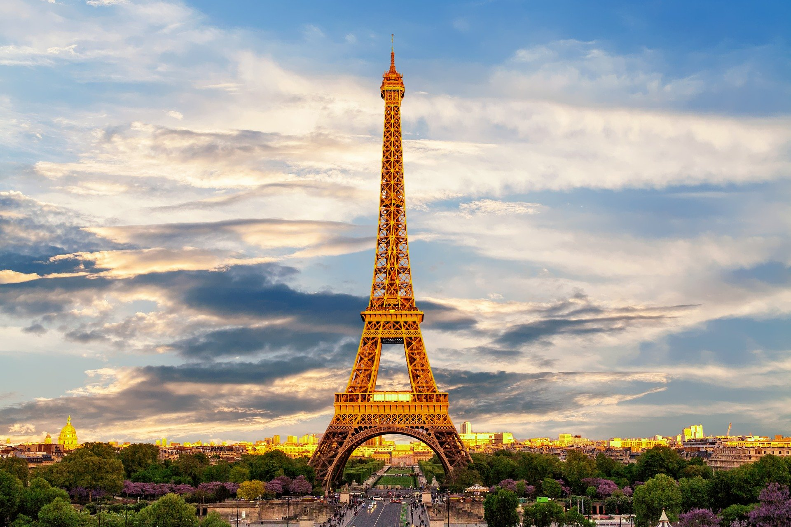
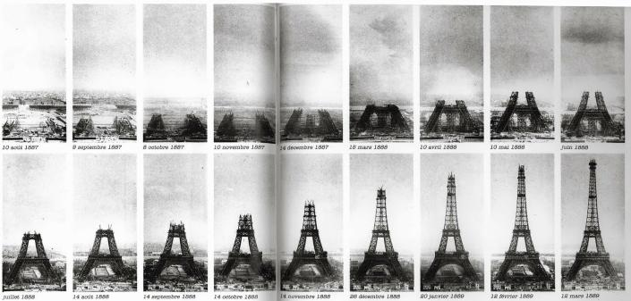

La Tour Eiffel est l'un des plus grands monuments de la capitale française : Paris. La Tour Eiffel est un monument construit
en 2 ans, de janvier 1887 à mars 1789. Celle-ci est construite pour l'exposition universelle de 1889. Haute de ses 300 mètres et ces 7 300 tonnes de fer, elle domine la capitale
sur le Champ-de-Mars. Mais la Tour Eiffel a bien faillit ne jamais voir le jour, pour cause certains artistes du 19ème siècle critiquent cette Tour qui jaillit au milieu de Paris.
Les polémiques s'éteindront d'elles-mêmes à l'achèvement de la Tour, devant la présence incontestable de l'œuvre achevée et face à l'immense succès populaire qu'elle rencontre.
Elle a reçu deux millions de visiteurs pendant l'Exposition de 1889.

Aujourd'hui la Tour Eiffel est le théâtre de nombreux évènements de portée internationale (mises en lumière, centenaire de la Tour, spectacle pyrotechnique de l’an 2000,
campagnes de peinture, scintillement...). La Tour Eiffel, c’est aussi la magie de la lumière. Son éclairage, son scintillement et son phare rayonnent et renouvellent le rêve tous les soirs.
Mais la Tour Eiffel c'est aussi le symbole de la France et l'image de Paris dans le monde avec 7 000 000 de visiteurs par an. Ce qui fait d'elle le monument le plus visité du monde.
La Dame de Fer est pour tous un symbole de la France.
